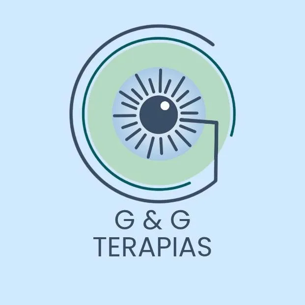
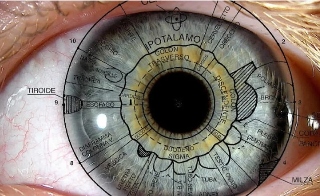

Nuestras Redes Sociales
Contenido sobre bienestar, terapias y salud natural.
Iridología, Terapia Floral, Reflexología y más. Más de 20 años acompañando tu camino hacia el bienestar natural.

Doctor en Psicoanálisis y especialistas en Microsemiótica Iridea, Iridología Contemporánea, Terapia Floral y Florales Cuánticos, Reflexología y MTC.
Con más de 20 años de experiencia, siempre buscamos mejorar nuestro conocimiento para ayudar a mejorar la salud y la calidad de vida de nuestros grupos de interés.

La Microsemiótica Iridea es una ciencia basada en el sistema más complejo y revelador de nuestro cuerpo:
La IRIS
El cuerpo humano siempre está enviando señales sobre su condición y su iris puede revelar un mapa detallado de esa condición.
Análisis de la Íris — Iridología, se realiza a través de Videoconferencia, donde analizaremos su estado físico, mental y emocional y de acuerdo a este análisis, le recetaremos el mejor tratamiento a través de flores, vitaminas, etc.
📱 Agendamiento previo por WhatsApp
📍 Asunción · Ciudad del Este · Saltos del Guairá
Con cita previa — por WhatsApp
"Descubre más sobre tu esencia con un especialista en Microsemiótica Iridía y rescata tu potencial natural."
Escríbenos directamente por WhatsApp y agendamos tu consulta.
Consultar por WhatsAppLa sesión de iridología fue reveladora. Guillermo identificó problemas que ningún médico convencional había detectado. El tratamiento floral fue increíblemente efectivo.
La consulta online fue muy cómoda y profesional. Me hicieron el análisis del iris por videollamada y los resultados me ayudaron muchísimo a entender mi estado de salud.
20 años de experiencia se notan. La combinación de reflexología y florales cuánticos transformó mi bienestar. Totalmente recomendado para quienes buscan medicina natural.
Contenido sobre bienestar, terapias y salud natural.